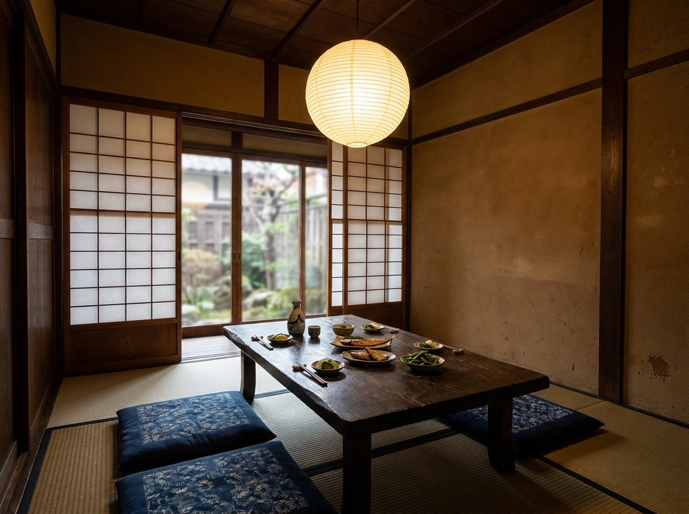
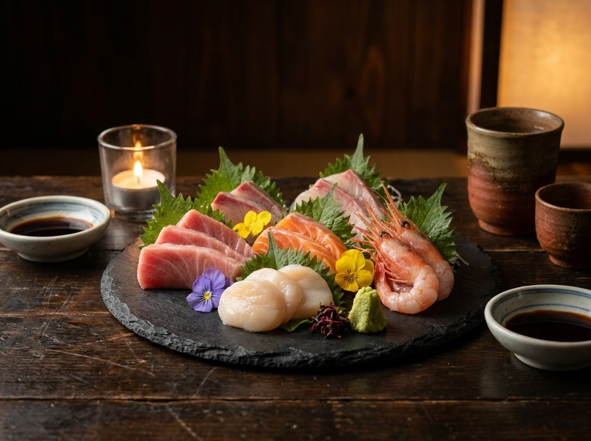

紋別産の魚介と旬野菜を、備長炭でじっくりと。素材の水分を逃さず、香ばしく焼き上げます。
上川大雪・国稀・男山など、北海道の蔵元を中心に。季節の限定酒も随時入荷します。
2名様から使える半個室と、最大24名様の掘りごたつ座敷。接待にも宴会にも。
焼き手の手元を眺めながら。お一人様も歓迎の特等席です。

2〜6名様の半個室。大切な席や接待、記念日のお食事に。

飲み放題付きコース¥4,500〜。会社宴会・貸切のご相談もLINEでどうぞ。